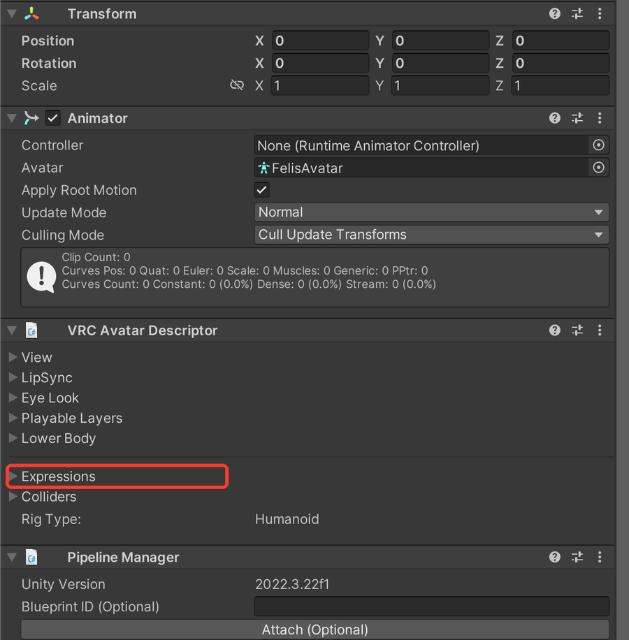

VRCExpressionsMenu / VRCExpressionParameters object reference is missing
- VRChat SDK → Show Control Panel → Builder タブの「2. Review Any Alerts」で、この赤い項目の右にある Select を押す（アバターの Avatar Descriptor が選ばれる）
- Inspector の VRC Avatar Descriptor で Expressions を開き、空（None）の欄を見る。Customize ボタンしか無ければ、押すと Menu と Parameters の欄が出る

自動で調べたいなら：改変おたすけ診断がこの設定を1クリックで見つけます（無料版あり）。無料で試す
画面に出る文字：
意味
Avatar Descriptor の Expressions で、Menu と Parameters の片方だけが入っていて、もう片方が空（None）のときに、VRChat SDK が出す赤いエラーです。SDK は「どちらか一方でも入っていたら、両方そろっているか」を調べます。上の文なら Menu が空、下の文なら Parameters が空です。両方とも空のときはこのチェックが行われず、エラーは出ません（VRChat標準のメニューで上がります）。この赤が残ったままビルドすると、Avatar validation failed で止まります。
よくある原因
- メニュー（またはパラメータ）を差し替えるときに、片方だけ入れた・片方を外した
- 欄に入っていたファイルを消した・移した・入れ直した（欄が None や Missing になる）
- ギミックや表情の道具を入れ直したあとに、片方の欄が外れた
原因の見分け方
- 「VRCExpressionsMenu object reference is missing.」が出る
→ Menu の欄が空。Parameters は入っている - 「VRCExpressionParameters object reference is missing.」が出る
→ Parameters の欄が空。Menu は入っている - Expressions を開くと Customize ボタンしか無い
→ 欄が隠れているだけ。Customize を押すと Menu と Parameters の欄が出る - 欄に「Missing」と出ている
→ 入っていたファイルが消えた・移った。元のファイルを探して入れ直す
直し方
- VRChat SDK → Show Control Panel → Builder タブの「2. Review Any Alerts」で、この赤い項目の右にある Select を押す（アバターの Avatar Descriptor が選ばれる）
- Inspector の VRC Avatar Descriptor で Expressions を開き、空（None）の欄を見る。Customize ボタンしか無ければ、押すと Menu と Parameters の欄が出る
- Parameters が空なら：入っている Menu のファイルをクリックし、Inspector の Parameters 欄に入っているファイルを探す。それが対になる Parameters
- Menu が空なら：Project の検索欄に t:VRCExpressionsMenu と入れ、アバターのフォルダにあるメニューのファイルを探す
- 見つけたファイルを、Avatar Descriptor の空の欄へドラッグする
- 対のファイルがどこにも無いときだけ、Project で右クリック → Create → VRChat → Avatars → Expressions Menu（または Expression Parameters）で新しく作って入れる
- 自分のメニューが要らないなら、Expressions の Reset To Default を押し、確認で OK を押す（2つとも空になり、VRChat標準のメニューになる）
- Review Any Alerts から赤い項目が消えたのを確かめてから、もう一度ビルドする
よくある勘違い
- 2つの文が同時に出ることは無い。両方とも空のときはチェックされず、VRChat標準のメニューになる。
- 空の欄に新しく作った空のファイルを入れると、この赤は消えても、メニューのボタンが使う名前がパラメータに無いため「VRCExpressionsMenu uses a parameter that is not defined.」が新しく出ることがある。まず元のファイルを探す。
- Reset To Default は、Avatar Descriptor の欄を2つとも空にするだけで、Menu や Parameters のファイル自体は消さない。あとで入れ直せる。
よくある質問
Menu と Parameters は両方入れないといけない？
片方だけは通りません。両方入れるか、Reset To Default で両方とも空にします。両方とも空なら、このチェックは行われず、VRChat標準のメニューでアップロードできます。
どのファイルを入れればいい？
アバターに付いてきた元の組です。Menu のファイルをクリックすると、Inspector の Parameters 欄に対になる Parameters のファイルが入っています。ギミックの説明書で別のファイルを指定されていれば、そちらを入れます。
直したのに、まだ赤い項目が消えない
Review Any Alerts は、変更のあと少し（SDK 3.10.6 では約2秒）待ってから調べ直します。少し待っても消えないときは、Builder で選んでいるアバターが、いま直したアバターと同じかを確かめます。
Avatar validation failed と一緒に出た
この赤が残ったままビルドしたためです。Console の「Encountered the following validation issues during build:」の下にこの文が出ています。欄を直し、ほかに赤い項目が無ければ、ビルドは通ります。
直す前に、プロジェクトのフォルダを丸ごと複製しておくと安全です。
この症状では：メニューとパラメータが2つそろっているかを調べます。
改変おたすけ診断（無料版あり）
ほかにも困っているなら：6本セット 1,980円（単品合計4,500円）＝ピンク・めり込み・浮く・ランク・QuestのPhysBone・パラメータ